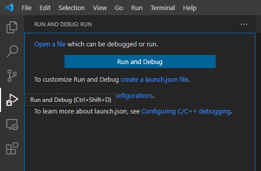
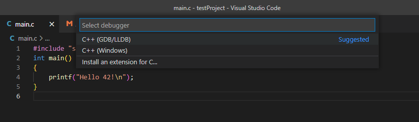
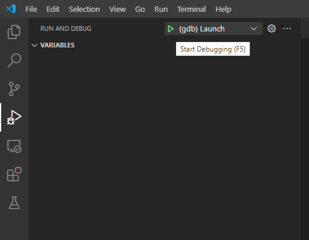
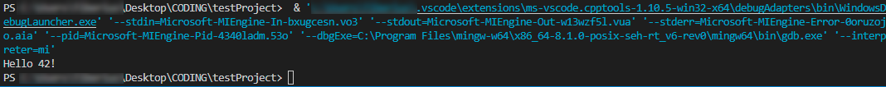
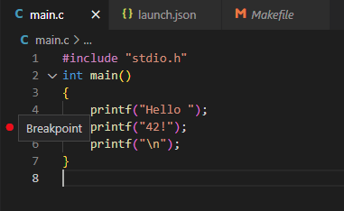
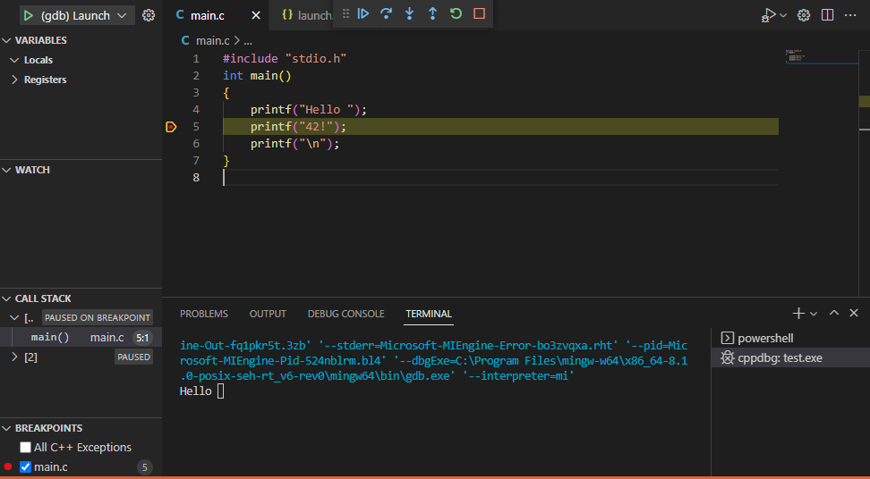
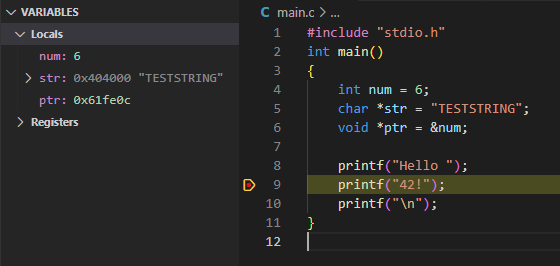

VSCode Debugger
by tpeters
Compile with -g flag
Compile with -g flag
To debug your code you need to compile it with the –g flag. You don't need to compile every file with that flag, just the files you want to debug. (e.g. If you're on a project which allows the use of the Libft, then you probably don't need to compile the Libft with the extra flag but only the "new" code) One easy way to do this is by adding a target-specific variable value to your CFLAGS-Variable and adding a debug Target:
1 | CFLAGS = -Wall -Wextra –Werror # ... |
Create a launch.json File
Create a launch.json File
To create the launch.json select a .c file in the editor and klick on the button on the Left and Press on the "create a launch.json file".
Then press on the “C++ (GDB/LLDB)”, since we want to use the gdb debugger and the new launch.json should open in the editor.

Paste following code into the launch.json:
1 | { |
You need to change the value for "program" to the path to the executable and if your program needs any arguments you can specify them in "args".
Example
Example
For example if you want to call your main.exe with the arguments 1 2 3: ("main.exe
1 2 3")
1 | // ... |
Running the Debugger
Running the Debugger
On the left the big blue "Run and Debug" button should disappear now and you can now see a small green triangle at the top next to the name specified in the "name" of the json.
If you now press F5 (or press that smol green triangle) your program should be executed and if it has any output you should also be able to see that in the debug-terminal:

The useful stuff a Debugger can do for you
If you go to one of your c files and set a Breakpoint by clicking to the left of that code line and then start the Debugger (F5/green triangle) the code gets executed until that Breakpoint but not further:(e.g. look at the terminal output for this example)The useful stuff a Debugger can do for you

At the top in the middle a new Menu popped up, which lets you either run until the next Breakpoint, run one line(F10) or jump into that function(F11). If you try to step into a function which wasn't compiled with the –g flag it just gets executed, but you can't see it step by step.And if you have any function parameters or Variables you can see their values on the top left:
